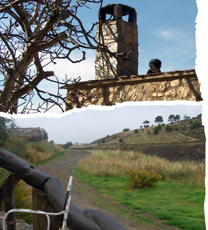

castellano


El Cortijo La Encina es un lugar ideal para hacer senderismo, montar a caballo, pasear, bañarse en la piscina o simplemente relajarse gozando de la naturaleza.
Actividades
-
Senderismo: Puedes practicar senderismo por caminos sin señalizar o por senderos señalizados como:
- La ruta de Gran Recorrido GR-7, que pasa por el Cortijo. + Info
- Sendero Sulayr + Info -
Balneario
Situado a 8 km. del Cortijo La Encina. + Info -
Rutas a caballo por la Alpujarra
Teléfonos: 627 794 821 ó 958 347 175
Mail: caballoblancotrekking@hotmail.com
Lugares de Interés
- Lanjarón. Puerta de la Alpujarra, es un pueblo con mucho encanto y famoso especialmente por la calidad de sus aguas, así como por su balneario. Sus orígenes más conocidos son musulmanes y entre los lugares de interés destacan las ruinas de un castillo de esa época.
- La Alpujarra granadina. Comarca de singular belleza, cuyos paisajes han cautivado a innumerables artistas y escritores. La Alpujarra es una de las zonas de Europa con más superficie protegida jurídicamente, tanto medioambiental como histórico-patrimonial.
- Parque Natural de Sierra Nevada. Incluye 171.829 hectáreas, 86.208 de ellas Parque Nacional. En el Parque se pueden practicar varios deportes o actividades: esquí, senderismo, escalada, parapente, etc.
- Granada. Ciudad histórica con la Alhambra y el barrio del Albaicín, Patrimonio de la Humanidad. También ofrece eventos culturales y festivales de música, danza, jazz y magia.
- Playa en la Costa Tropical. A menos de 50 km. del Cortijo se encuentra el mar y multitud de playas como Motril o Salobreña, pasando por Almuñécar.
Cortijo La Encina | Camino Tello/Terrón 18420 Lanjarón (GRANADA) |
Tel 958 12 93 30 | Mov 654 123090 |
info@cortijolaencina.com
© Ingrid Dominguez Bravo | diseño por Lali Ventura |
web por deide | estudio de diseño |
Cumple los estándares XHTML 1.0 +
CSS 2.1 |
SiteMap